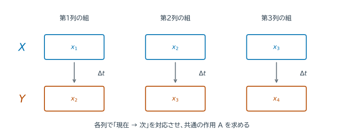
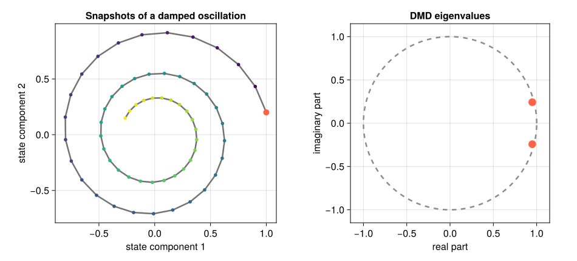
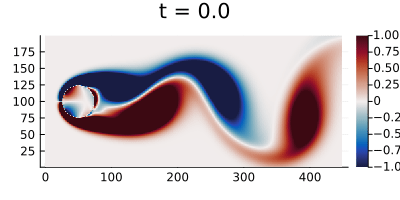
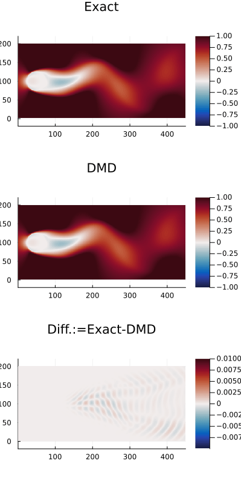

14. 動的モード分解#
動的モード分解（dynamic mode decomposition; DMD）は、時系列のsnapshotから、1 stepの時間発展を近似する線形作用と、その固有モードを推定する方法である。SVDによる低次元化、最小二乗、固有値分解を組み合わせる。
14.1. この章の目標#
snapshot行列 \(X,Y\) を構成できる。
DMDが解く最小二乗問題を説明できる。
最小二乗・SVD・固有値問題が、DMDでそれぞれ何を担当するか説明できる。
空間場をベクトル化し、DMD modeを元の形へ戻して解釈できる。
離散時間固有値から成長率と周波数を求められる。
Fourier解析との違いとDMDの限界を説明できる。
14.2. データについて#
この章で使用するデータは、円柱周りの2次元非圧縮流れの数値シミュレーション結果である。
DMDの教科書http://dmdbook.comの付録にある CYLINDER_ALL.mat を使用する。
コードの実行が必要な場合は各自でダウンロードして、DATA/FLUIDS/CYLINDER_ALL.mat に配置すること。
14.3. 時間変化の規則を、観測から求める#
第9章「常微分方程式の初期値問題」では、微分方程式から次の状態を計算した。今度は、状態の記録はあるが、更新の式が分からない場合を考える。例えば等間隔で測った値が1、0.8、0.64、0.512なら、毎回0.8倍になる規則 \(x_{k+1}=0.8x_k\) が見える。
雑音がある場合には、隣同士の比を一つずつ読むより、全組に対して \(x_{k+1}\approx ax_k\) を当てはめる方が自然である。最小二乗法なら \(a=\sum_k x_kx_{k+1}/\sum_k x_k^2\) となる（分母が0でない場合）。DMDはこの考え方を、各時刻の状態がベクトルの場合へ広げる。
例えば棒の温度分布を1列に並べたものが、一つのスナップショットである。そこから、どの空間パターンがどの速さで減衰・振動するかを推定する。第6章の最小二乗、第12章のSVD、第11章の固有値問題を組み合わせる。
14.4. snapshotから時間発展を推定する#
等時間間隔 \(\Delta t\) で得た状態 \(x_1,\ldots,x_{m+1}\in\mathbb{R}^n\) から
を作る。例えば4時刻なら、\(X\) の列は第1・2・3時刻、\(Y\) の列は第2・3・4時刻であり、同じ列番号が「現在と次」を組にする。


図 14.1 同じ列の上下が、入力と出力の一つの組である。\(x_2\) は第1列では「次」、第2列では「現在」として現れる。共通の \(A\) で \(Ax_1\approx x_2\)、\(Ax_2\approx x_3\)、\(Ax_3\approx x_4\) を同時に満たすように当てはめる。#
両方とも \(n\times m\) 行列である。DMDは
となる線形作用 \(A\) をFrobeniusノルムの意味で当てはめる。この残差を最小にする行列のうちFrobeniusノルムが最小の解は \(A=YX^+\) である。\(X^+\) は第12章の擬似逆で、正の特異値を逆数にして作る。ただし、\(A\in\mathbb{R}^{n\times n}\) を明示すると大規模になる。
14.5. SVDによる低次元化#
\(X\) のrank-\(r\) SVDを
とする。保持した特異値はすべて正とし、打ち切った近似作用素を \(A_r=YV_r\Sigma_r^{-1}U_r^*\) と作る。\(U_r\) が張る部分空間へ射影すれば \(U_r^*A_rU_r\) となり、\(U_r^*U_r=I\) を使うと次の式を得る。
元の \(n\times n\) 行列を作らず、\(r\times r\) の \(\widetilde A\) だけを扱える。小さな固有値問題
を解き、exact DMD modesを
とする。exact DMD はこのモードの構成法の名称であり、観測値や未来を誤差なく再現するという保証ではない。\(\lambda_j\ne0\) で対応する列 \(\phi_j\) が0でなければ、\(A_r\phi_j=\lambda_j\phi_j\) が成り立つ。小さい特異値の逆数はノイズを増幅するため、\(r\) の選択は正則化の役割も持つ。
using LinearAlgebra
function exact_dmd(X,Y,r)
size(X)==size(Y) || error("XとYの形をそろえてください")
F = svd(X;full=false)
1 ≤ r ≤ length(F.S) || error("rは1以上、特異値の個数以下にしてください")
Ur = F.U[:,1:r]
sr = F.S[1:r]
sr[end] > maximum(size(X))*eps(eltype(sr))*sr[1] || error("保持した特異値に数値的な0が含まれます")
Vr = F.V[:,1:r]
Atilde = Ur' * Y * Vr * Diagonal(1 ./ sr)
E = eigen(Atilde)
Φ = Y * Vr * Diagonal(1 ./ sr) * E.vectors
return E.values,Φ,F.S
end
14.6. 2次元の減衰振動#
回転と減衰を組み合わせた線形系
を使う。\(R(\theta)=\begin{bmatrix}\cos\theta&-\sin\theta\\\sin\theta&\cos\theta\end{bmatrix}\) は回転で、1ステップごとに角度 \(\theta\) だけ回り、長さが \(\rho\) 倍になる。固有値は \(\rho e^{\pm i\theta}\) である。ここでは \(\Delta t=0.1\)、\(\rho=0.98\)、\(\theta=0.25\) とし、60ステップのうち最初の40組でDMDを学習する。後半は規則の予測を確認するために残す。
Δt = 0.1
ρ = 0.98
θ = 0.25
Atrue = ρ .* [cos(θ) -sin(θ); sin(θ) cos(θ)]
m = 60
snapshots = zeros(2,m+1)
snapshots[:,1] = [1.0,0.2]
for k in 1:m
snapshots[:,k+1] = Atrue*snapshots[:,k]
end
train_pairs = 40
X = snapshots[:,1:train_pairs]
Y = snapshots[:,2:train_pairs+1]
λ,Φ,s = exact_dmd(X,Y,2)
Admd = Φ*Diagonal(λ)*pinv(Φ)
println("真の固有値 = ", eigvals(Atrue))
println("DMD固有値 = ", λ)
println("DMD modelの1-step相対残差 = ", norm(Y-Admd*X)/norm(Y))
真の固有値 = ComplexF64[0.9495341732764319 - 0.2424558800694325im, 0.9495341732764319 + 0.2424558800694325im]
DMD固有値 = ComplexF64[0.9495341732764312 - 0.24245588006943228im, 0.9495341732764312 + 0.24245588006943228im]
DMD modelの1-step相対残差 = 1.2268530519639235e-15
Show code cell source
# 初回のみ: import Pkg; Pkg.add("CairoMakie")
using CairoMakie
CairoMakie.activate!(type="svg")
set_theme!(Theme(fontsize=16, linewidth=2.5))
figure_dir = isdir("pic") ? "pic" : joinpath("..", "pic")
using LinearAlgebra
ρ_plot, θ_plot = 0.98, 0.25
A_dmd_plot = ρ_plot .* [cos(θ_plot) -sin(θ_plot); sin(θ_plot) cos(θ_plot)]
snapshots_plot = zeros(2, 61)
snapshots_plot[:, 1] = [1.0, 0.2]
for k in 1:60
snapshots_plot[:, k+1] = A_dmd_plot*snapshots_plot[:, k]
end
eigenvalues_plot = λ # データから求めたDMD固有値
unit_angle = range(0.0, 2π, length=500)
fig_dmd = Figure(size=(950, 430))
ax_state = Axis(fig_dmd[1, 1]; xlabel="state component 1", ylabel="state component 2",
title="Snapshots of a damped oscillation", aspect=DataAspect())
lines!(ax_state, snapshots_plot[1, :], snapshots_plot[2, :]; color=:gray45)
scatter!(ax_state, snapshots_plot[1, :], snapshots_plot[2, :];
color=0:60, colormap=:viridis, markersize=8)
scatter!(ax_state, [snapshots_plot[1, 1]], [snapshots_plot[2, 1]];
color=:tomato, markersize=14)
ax_spectrum_dmd = Axis(fig_dmd[1, 2]; xlabel="real part", ylabel="imaginary part",
title="DMD eigenvalues", aspect=DataAspect())
lines!(ax_spectrum_dmd, cos.(unit_angle), sin.(unit_angle);
color=:gray55, linestyle=:dash)
scatter!(ax_spectrum_dmd, real.(eigenvalues_plot), imag.(eigenvalues_plot);
color=:tomato, markersize=18)
xlims!(ax_spectrum_dmd, -1.15, 1.15)
ylims!(ax_spectrum_dmd, -1.15, 1.15)
save(joinpath(figure_dir, "dmd_trajectory_spectrum.svg"), fig_dmd)
fig_dmd


図 14.2 状態空間の回転は複素共役な固有値の偏角に、1ステップごとの縮小は固有値の絶対値に対応する。単位円の内側にあるため、このモードは時間とともに減衰する。#
14.7. 成長率、周波数、再構成#
離散時間固有値 \(\lambda_j\) に対し
と置く（\(\lambda_j\ne0\)）。\(\lambda_j=\rho_j e^{i\theta_j}\) と書けば、\(\omega_j=(\log\rho_j+i\theta_j)/\Delta t\) である。\(\operatorname{Re}\omega_j\) は連続時間の成長・減衰率、\(\operatorname{Im}\omega_j/(2\pi)\) は周波数である。偏角には \(2\pi\) の整数倍の不定性があるため、周波数にも \(1/\Delta t\) の整数倍の不定性がある。主値は一つの範囲を選ぶ規約であり、第13章のエイリアシングを解消するものではない。
初期振幅 \(b=\Phi^+x_1\) を求めれば
で再構成できる。
Δt = 0.1
ω = log.(complex.(λ))./Δt
b = Φ \ complex.(snapshots[:,1])
reconstruction = hcat([real.(Φ*(λ.^(k-1).*b)) for k in 1:m+1]...)
println("成長率 = ", real.(ω))
println("周波数 = ", imag.(ω)./(2π))
println("学習区間の再構成相対誤差 = ", norm(snapshots[:,1:41]-reconstruction[:,1:41])/norm(snapshots[:,1:41]))
println("未使用の後半の予測相対誤差 = ", norm(snapshots[:,42:end]-reconstruction[:,42:end])/norm(snapshots[:,42:end]))
成長率 = [-0.20202707317520185, -0.20202707317520185]
周波数 = [-0.3978873577297384, 0.3978873577297384]
学習区間の再構成相対誤差 = 1.2717807757320093e-14
未使用の後半の予測相対誤差 = 3.3852915604244035e-14
14.8. Fourier解析との違い#
Fourier解析は、あらかじめ決めた互いに直交する時間周波数へ信号を分解する。DMDは、snapshotから空間modeと複素指数時間発展を同時に推定する。DMD固有値は単位円上に限られず、成長・減衰も表せる。
ただし、DMDが非線形系を線形系へ厳密に変換するとは限らない。打切りなしの標準的な当てはめは、観測した組に対する1ステップ残差を最小化する。特異値を打ち切れば、選んだ入力部分空間に制限した近似となる。いずれも長時間の予測誤差を直接最小化しているわけではない。結果は観測量、sampling、rank、ノイズに依存する。
14.9. \(\clubsuit\) カルマン渦：空間パターンとしてDMDを見る#
2次元の減衰振動では固有値の意味を確認できたが、DMD modeがどのような空間パターンを表すかは見えにくい。そこで、円柱後流に生じるKármán（カルマン）渦列を考える。円柱の上下から渦が交互に放出され、後流に周期的な構造が現れる。
以下はReynolds数100の数値simulationから得た渦度場である。赤と青は逆向きの回転を表し、時間とともに渦が下流へ運ばれる様子が分かる。


図 14.3 円柱後流の渦度場。赤と青の渦が交互に放出される。#
各時刻の場は \(199\times449\) の格子値を持つ。これを縦に並べれば
という1本のsnapshotになる。151枚の場から \(X,Y\in\mathbb{R}^{89351\times150}\) を作れば、本文と同じDMDを適用できる。DMD mode \(\phi_j\) も89351次元のベクトルだが、\(199\times449\) に戻すと、流れの中で一緒に振動・移流する空間構造として見られる。
アニメーションの見方
DMDは各pixelを別々に近似するのではない。空間全体に広がる少数のmodeと、各modeに対応する成長率・周波数を組み合わせて、流れ場の時間発展を表す。
14.9.1. Juliaで再計算する#
次のコードは、付属dataの流れ方向速度 UALL を読み、対話的に実行しやすいよう格子点を1点おきに取り出してrank-15 DMDを計算する。最後に、元のsnapshot、DMD再構成、両者の差、代表的な振動modeを並べる。
実行環境と計算量
初回だけ MAT.jl と CairoMakie のinstallが必要である。元の CYLINDER_ALL.mat は約301 MB（約287 MiB）あり、全格子点でSVDと再構成を行うと相応のmemoryと時間を使う。再計算コードは空間格子を1点おきに間引き、掲載アニメーションは全格子点を使用している。ローカルの DATA/FLUIDS/CYLINDER_ALL.mat を読む。Colabでノートブックだけを開いた場合、データファイルも別途配置する必要がある。この節の再実行は基本演習には必要ない。
Show code cell source
# 初回のみ実行する
# import Pkg; Pkg.add(["MAT", "CairoMakie"])
using MAT
using CairoMakie
CairoMakie.activate!(type="svg")
data_candidates = (
joinpath("DATA", "FLUIDS", "CYLINDER_ALL.mat"),
joinpath("..", "DATA", "FLUIDS", "CYLINDER_ALL.mat"),
)
data_index = findfirst(isfile, data_candidates)
isnothing(data_index) && error("CYLINDER_ALL.matが見つかりません")
data_file = data_candidates[data_index]
u_all = matopen(data_file) do file
read(file, "UALL")
end
nrow, ncol = 199, 449
stride = 2
rows, cols = 1:stride:nrow, 1:stride:ncol
sample_indices = vec(LinearIndices((nrow,ncol))[rows,cols])
u_sampled = u_all[sample_indices,:]
Xu = u_sampled[:,1:end-1]
Yu = u_sampled[:,2:end]
rank_vortex = 15
λu, Φu, su = exact_dmd(Xu,Yu,rank_vortex)
bu = Φu \ complex.(Xu[:,1])
time_dynamics = hcat([(λu.^k).*bu for k in 1:size(Yu,2)]...)
Yu_dmd = real.(Φu*time_dynamics)
println("rank-15再構成の相対誤差 = ", norm(Yu-Yu_dmd)/norm(Yu))
Δt_vortex = 0.2
ωu = log.(complex.(λu))./Δt_vortex
positive_modes = findall(imag.(ωu) .> 0)
isempty(positive_modes) && error("正の周波数を持つモードがありません")
contributions = [abs(bu[j])*norm(Φu[:,j]) for j in positive_modes]
mode_id = positive_modes[argmax(contributions)]
println("代表modeの周波数 = ", imag(ωu[mode_id])/(2π))
snapshot_id = 60
field_size = (length(rows),length(cols))
fig_vortex = Figure(size=(720, 1100))
vortex_panels = (
(reshape(Yu[:,snapshot_id],field_size...), "Data", (-1.0, 1.0)),
(reshape(Yu_dmd[:,snapshot_id],field_size...), "DMD (r=15)", (-1.0, 1.0)),
(reshape(Yu[:,snapshot_id]-Yu_dmd[:,snapshot_id],field_size...),
"Data - DMD", (-0.02, 0.02)),
(real.(reshape(Φu[:,mode_id],field_size...)), "Oscillatory DMD mode", nothing),
)
for (row, (field, title, colorrange)) in enumerate(vortex_panels)
ax = Axis(fig_vortex[row, 1]; title=title, aspect=DataAspect(), yreversed=true)
if isnothing(colorrange)
heatmap!(ax, permutedims(field); colormap=:vik)
else
heatmap!(ax, permutedims(field); colormap=:vik, colorrange=colorrange)
end
hidedecorations!(ax)
end
figure_dir = isdir("pic") ? "pic" : joinpath("..", "pic")
save(joinpath(figure_dir,"dmd_vortex_diagnostics.svg"),fig_vortex)
fig_vortex
14.9.2. 150枚の画像を15個のmodeで再構成する#
次のanimationは、流れ方向速度について、上から元data、rank-15 DMDによる再構成、両者の差を示す。


図 14.4 円柱後流の速度場とrank-15 DMD再構成。下段は Data - DMD である。#
元dataとDMD再構成のcolor scaleは \([-1,1]\)、差分は \([-0.01,0.01]\) である。差分は上2段より100倍細かい尺度で表示されている。色の濃さだけで元の値と誤差を比較せず、各段のカラーバーを確認する。
再計算コードは、再構成誤差と代表的な振動モードの周波数を出力する。周波数への換算には、このデータの時間間隔として \(\Delta t=0.2\) を用いる。モードの係数だけの大小はベクトルの正規化で変わるため、ここでは係数の絶対値とモードのノルムの積で代表を選ぶ。
この例では、150本のsnapshotで表される時間発展を15 modeへ圧縮しても、交互に放出される渦の主要な周期構造が保たれている。ただし、再構成が良いことと未知時刻の予測が良いことは同じではない。rankを変えたときの誤差と、学習区間外の予測を別々に確認する必要がある。
14.10. まとめ#
本章のまとめ
DMDでは、隣接時刻の組から時間更新を当てはめ、SVDで小さな空間へ移し、固有値から成長・減衰・振動を読む。学習した区間の再構成と未使用区間の予測を分け、保持する特異値・観測間隔・観測量への依存性を確かめる。
次の第15章では、確率分布に関する平均を、確率的な反復で計算する。
14.11. 演習#
本文の式・表・出力を使って説明してよい。
演習
現在と次を組にする：等間隔の観測1、0.8、0.64、0.512から \(X,Y\) を1行の行列として書け。\(Y=aX\) を満たす \(a\) はいくらか。
固有値を読む：1ステップの固有値が \(0.98e^{0.25i}\) なら、長さは増えるか減るか。\(\Delta t=0.1\) のとき、角度の進みを時間当たりへ換算するには何で割ればよいか。
当てはめと予測：学習に使ったスナップショットをよく再構成できた。未知の未来にも使えるかを確かめるには、どのデータを残し、何を比較したいか。
14.12. 参考文献#
Kutz et al., Dynamic Mode Decomposition: Data-Driven Modeling of Complex Systems, SIAM, 2016.
Kutz, Data-Driven Modeling & Scientific Computation: Methods for Complex Systems & Big Data, Cambridge University Press, 2013. Cylinder-wake data: DMD Book.
Tu et al., On Dynamic Mode Decomposition: Theory and Applications, Journal of Computational Dynamics 1(2), 2014.